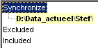
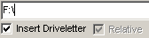

FileNurse, Synchronisation
Introduction
The primary purpose of this feature is to synchronize datafiles on multiple computers through some kind of medium. But it can also be used to backup data to for instance a network drive. And it's also usefull for diskmanagement and file searching.
Normal synchro action
Basic Modes
There are 3 different modes of comparing (the examples will clarify these)
For each path (in all modes) it's possible to indicate if subdirectories should be included in the comparison.
For all paths (in all modes) it's possible to indicate which files should be left out of the comparison, and after that it's even possible to make exceptions on this exclusion list.
Two files are recognized as different, if the datetime flag is different and/or if the size is different. To compensate for the weird difference in datetime flag between FAT and NTFS (in the summertime), it's possible to add or subtract 1 hour before the comparison is done.
All settings can be stored in a file.
Mode-A
This is the just a normal compare between 2 directories.
|
primary path
|
Secondary path
Here all the files (excluding subdirectories) in "D:\DATA_ACTUEEL\STEF\...." are compared to the files in "D:\TEMP2\...." |
|
primary path  |
The same as above, except all subdirectories are included. Setting can be done through the RightMouse button. |
|
primary path
|
The same as above, ... but now all the exe-files are left out of the comparison, ... except the file "FileNurse.exe" |
Mode-B
Compare a number of paths, of the same drive, to the corresponding paths of another relative location
The primary path is the same as in mode-A.
But the secondary path consists of the specified secondary path plus the primary path (minus the drive).
|
primary path
|
Secondary path
Here all the files (including subdirectories) in "D:\DATA_ACTUEEL\STEF\...." are compared to the files in "D:\TEMP2\DATA_ACTUEEL\STEF\...." |
|
primary path
|
And of course you can add a lot of exclusions and exceptions. |
Mode-C
At first sight this mode looks very simmilar to mode-B, except this mode can be used to backup different drives to just 1 medium.
Therefor the secondary path consists of
|
primary path
|
Secondary path 
Here all the files (including subdirectories) in "D:\DATA_ACTUEEL\STEF\...." are compared to the files in "D:\TEMP2\D\DATA_ACTUEEL\STEF\...." and (excluding subdirectories) "C:\DATA\...." are compared to the files in "D:\TEMP2\C\DATA\...." |
Wildcards
A lot of wildcards are possible, but not all are allowed all the time. To be safe, don't use the wildcards "<" and ">" and use only files (thus without paths) in the excluded and included section. In the Synchronize section it's safe to use both bare paths (without filenames) and paths with filenames.
|
*.txt C:\*.txt ?:\*.txt C:lib\*.txt lib\*.txt C:\lib\*.txt *:\lib\*.txt < > |
Ignores all text files in any folder and drive Ignores all text files in root of drive C: Ignores all text files in root of any drive Ignores all text files in lib subfolder of any folder of drive C: Ignores all text files in lib subfolder of any folder of any drive Ignores all text files in lib subfolder of root of drive C: Ignores all text files in lib subfolder of root of any drive Exclude subdirectories, even is explicitly specified (must be first character) Include subdirectories, even is explicitly excluded (must be first character) |
TreeView
The treeview shows 3 sections: Synchronize, Excluded and Included.
If a section is empty, its title is dimmed.
|
|
With Insert New / Delete, it's possible to add or remove items from the treeview. By clicking on an item, it's possible to edit an item (section names can not be changed). With drag and drop it's possible to move items within the treeview. Set Colors is used to set font and background colors for items, depending on their status. Show These Files is explained below. Include Subdirs (only valid for paths in the Synchronize section) can be (un-)checked. It's advised to set different fonts/background for paths with and without sub directories. |
Show These Files
|
Synchronize |
Shows all the files (thus also the equal files) indicated by all the selection masks, with the full apply of all excluded and all included files |
|
Synchronize child |
Shows all the files indicated by the selected child, with the full apply of all excluded and all included files |
|
Excluded |
Shows all the files indicated by all the excluded masks, with the full apply of all included files |
|
Excluded child |
Shows all the files indicated by all the selected excluded mask, with the full apply of all included files |
|
Included |
Shows all the files indicated by all the included masks |
|
Included child |
Shows all the files indicated by the selected masks |
Typical example of using "show these files"
Some day you might discover that windows is creating a lot of nonsense files like "thumbs.db". These files also pollutes your transport medium, so want to get rid of them.
and now your transport medium is clean and will stay clean.
FileList
The filelist contains all the files, according to the last selected comparison.
If "show these files" is used, also equal files will be shown.
|
|
With "Reverse, ===>, <===" you can set o change the copy direction.
"Delete Both/Left/Right Side" deletes the selected files at the indicated locations.
"Remove from list", removes the selected files from the list (not from the driectories). Besides it's a temporary action, because the will return on the next comparsion.
Colors, changes colors of listitems, depending on their status. |
Program start
When the program is started with the parameter "synchro" and a drive letter, it starts automatically the synchronisation module:
FileNurse.exe synchro F:\
The drive letter may be abbreviated to a single letter or extended to a fully qualified path.
So other valid examples are:
F
F:
F:\
F:\path\subpath\
Load / Save
With Load and Save, the treeview, directory paths and filemasks are loaded or saved explicitly to or from the secondary path (in general the transport medium) in the file "PH_FileNurse.ini" .
A copy of this file is also stored in a subdirectory "Backups" of the directory of FileNurse. The filename of this copy is the serial number of the transport medium..
Font & Background